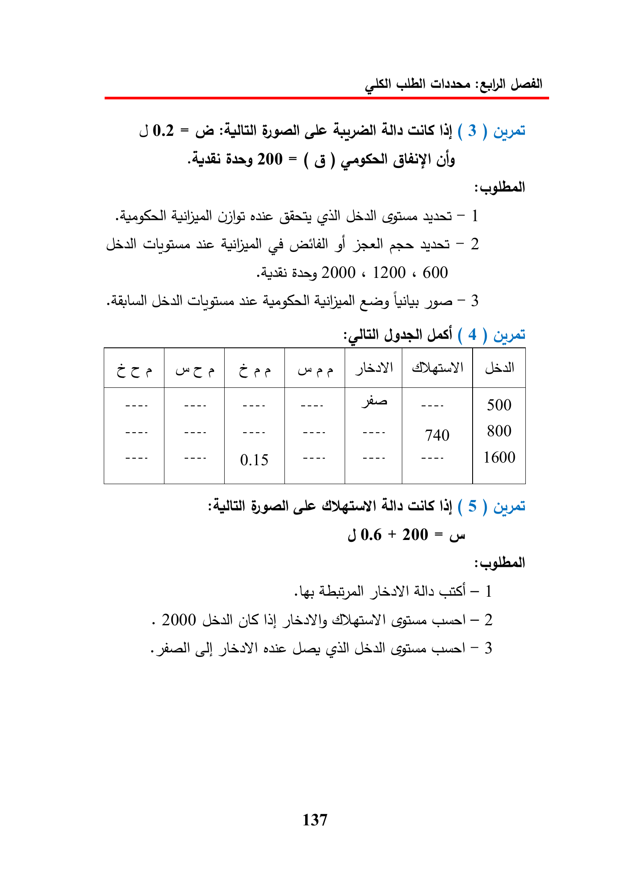

J
0.2
=
le
Alla
cuils
14)
(3)
Quai
200
=
aly
(gall
Jdall
yaad
—
|
Jaa)
sic
8
sas
-
2
2000
«
1200
«
600
sic
Aye
Lily
—
3
Jas
(4)
Quai
coe
|
Cee
|
wee
|
A)
|
---
740
800
----
1600
2A)
8
ole
Ata
cls
13)
(5)
Quai
J
0.6
+
200
=
UH
>
Gigllaall
LAS!
Casi
-
1
2000
Ia)
slaty
—
2
(cl)
cate
ey
Gill
—
3
137